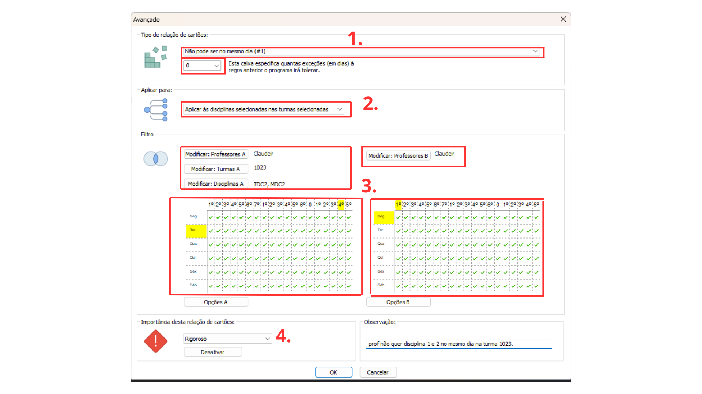

Detalhes do post:
Separação de Aulas de Disciplinas Diferentes no Mesmo Dia para o Mesmo Professor:
Descrição:O Professor quer que a aula da disciplina X e da disciplina Y não sejam dadas no mesmo dia numa mesma turma
Para resolver esse tipo de situação devemos restringir a colocação dos cartões das aulas usando as relações entre cartões avançados.

1- Selecione o tipo de restrição “Não pode ser no mesmo dia (#1)”, na caixa de texto logo abaixo digitar o número de exceções que o software pode considerar no momento de criar a grade de horários.
2- Selecionar a opção “Aplicar às disciplinas selecionadas nas turmas selecionadas”, para que a restrição afete as disciplinas X e Y apenas na turma que o professor solicitou (se for o caso de selecionar mais que duas disciplinas, a mesma regra se mantém).
3- Utilize o filtro “Modificar Professores” nas lados A e B para selecionar o professor que solicitou a restrição e leciona a disciplina X e Y; Utilize o filtro “Modificar Turmas” selecionando a turma em que as disciplinas X e Y não podem ser dadas no mesmo dia; Utilize o filtro “Modificar disciplina” para selecionar as disciplinas X e Y(ou mais disciplinas, caso seja necessário).
Selecionar no quadro de horários os dias e períodos em que as disciplinas não podem ser alocadas juntas.
4- Selecione a importância da Restrição, entre: baixa, normal, alta, rigoroso ou otimizar; de acordo com a importância a ser atribuída a essa relação na instituição.
Também escreva uma observação que facilite a identificação da restrição e explique seu objetivo.
Clique em “ok” no canto inferior para salvar a relação.